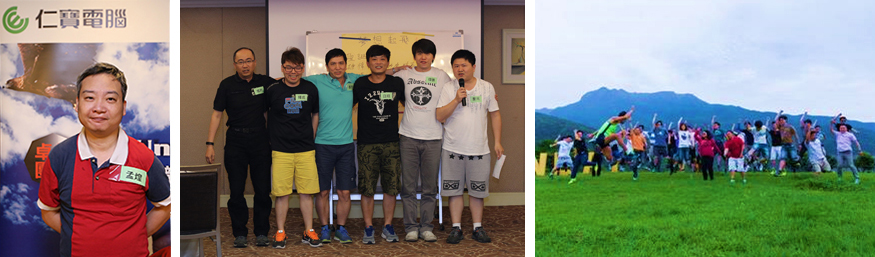

卓越團隊：金山野戰心得記錄
戰地記者：孟煌 Roger
|  | |||||||||||||
|
「卓越團隊-活力共識營」於4/22開訓，部隊開拔至金山與陽明山郊外展開為期兩天一夜的訓練 (想逃兵都因為有點交通困難，打消念頭)。此次參與演訓的單位包括了 BU1/BU2/共同工程處及Site HR 等菁英參與 (混合編組)，陣容之浩大，戰力更極為的堅強 (其實是固若磐石，以卵擊石)... 各單位菁英到達營地後，先來個簡單的自我介紹及任務分組後，展開序幕。此訓練的目的不是加強偵蒐，破壞，殲滅敵人之作戰技巧，而是如何互相信任、互相扶持、團隊合作、共同腦力激盪，完成任務與目標為終極標的。 此次演訓極為重要的三部曲：
此次演訓極為感動之處：
據本記者實地參與演訓後之感受，就是演訓教官時而魔鬼般的嚴厲(佔了百分之70) 時而像天使一樣的溫柔(佔了百分之30)的摧殘，全員皆能達成目標，成功完訓，極為推薦優秀人才參與類似的團隊訓練，保證不枉此行。 |
|||||||||||||